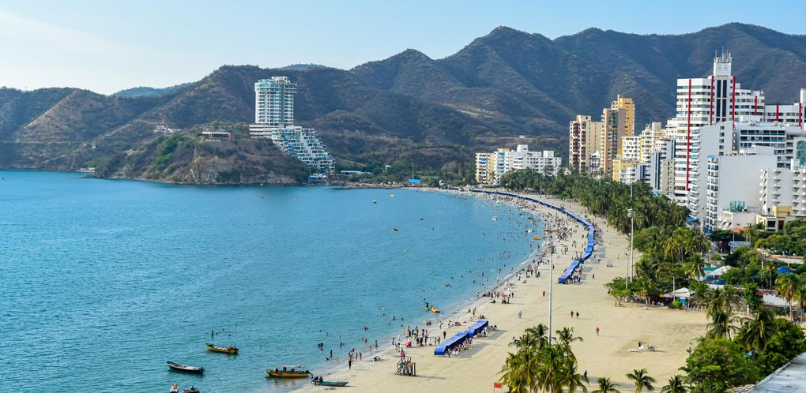
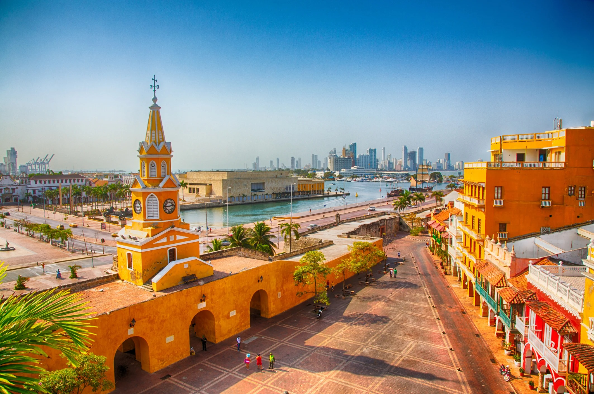

¡DESTINOS TURISTICOS EN COLOMBIA!
Nombre: Santa Marta

Historia: Santa Marta, fundada en 1525 por Rodrigo de Bastidas, es la ciudad más antigua de Colombia y la segunda de Sudamérica. Conocida como la "Perla de América", destaca históricamente por ser el lugar donde murió Simón Bolívar en la Quinta de San Pedro Alejandrino y por su geografía única que une el Mar Caribe con la Sierra Nevada.
Ubicacion: Santa Marta se encuentra en el norte de Colombia, a orillas del Mar Caribe y a los pies de la Sierra Nevada. Pertenece al departamento del Magdalena y está estratégicamente situada entre la selva tropical y el océano.
Nombre: Cartagena de Indias

Historia: Cartagena de Indias, fundada en 1533, es famosa por su Ciudad Amurallada y el Castillo de San Felipe, que la protegían de ataques piratas en la época colonial. Es Patrimonio de la Humanidad y destaca por su arquitectura colorida, sus plazas históricas y su importancia como el puerto más importante del Virreinato.
Ubicacion: Se sitúa en la costa norte de Colombia, a orillas del Mar Caribe. Es la capital del departamento de Bolívar y se encuentra a unas pocas horas de Barranquilla.